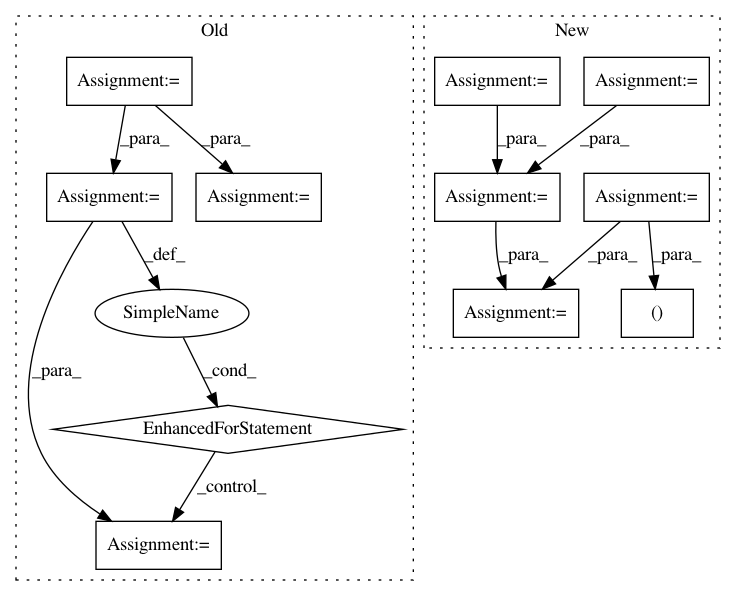

c6607119c25d0178245243ef3fdd3d176dd0d8f2,trackpy/linking/utils.py,,coords_from_df,#Any#Any#Any#,36
Before Change
Empty frames will be returned as empty arrays of shape (0, ndim).
ndim = len(pos_columns)
grouped = iter(df.groupby(t_column)) // groupby sorts by default
// get the first frame to learn first frame number
cur_frame, frame = next(grouped)
cur_frame = int(cur_frame)
yield cur_frame, frame[pos_columns].values
cur_frame += 1
for frame_no, frame in grouped:
frame_no = int(frame_no)
while cur_frame < frame_no:
yield cur_frame, np.empty((0, ndim))
cur_frame += 1
yield cur_frame, frame[pos_columns].values
cur_frame += 1
def coords_from_df_iter(df_iter, pos_columns, t_column):
A generator that returns ndarrays of coords from a generator of
DataFrames. Also returns the first value of the t_column.
ndim = len(pos_columns)
After Change
// This implementation is much faster than using DataFrame.groupby.
ndim = len(pos_columns)
times = df[t_column].values
pos = df[pos_columns].values
idxs = np.argsort(times, kind="mergesort") // i.e. stable
times = times[idxs]
pos = pos[idxs]
unique_times, time_counts = np.unique(times, return_counts=True)
pos_by_frame = np.split(pos, np.cumsum(time_counts)[:-1])
idx = 0
for time in range(unique_times[0], unique_times[-1] + 1):
if time == unique_times[idx]:
In pattern: SUPERPATTERN
Frequency: 3
Non-data size: 11
Instances
Project Name: soft-matter/trackpy
Commit Name: c6607119c25d0178245243ef3fdd3d176dd0d8f2
Time: 2020-01-22
Author: anntzer.lee@gmail.com
File Name: trackpy/linking/utils.py
Class Name:
Method Name: coords_from_df
Project Name: analysiscenter/batchflow
Commit Name: 53f15232ed13154bc5338dc002b43c3c62547ea7
Time: 2017-11-12
Author: rhudor@gmail.com
File Name: dataset/models/tf/vgg.py
Class Name: VGG
Method Name: body
Project Name: chainer/chainercv
Commit Name: 90b78b1379b3423aa3b4b5d0de7313f88bda23ab
Time: 2019-02-17
Author: yuyuniitani@gmail.com
File Name: chainercv/utils/mask/mask_to_bbox.py
Class Name:
Method Name: mask_to_bbox